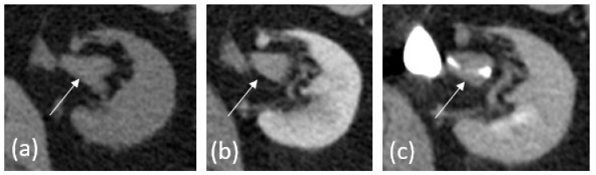
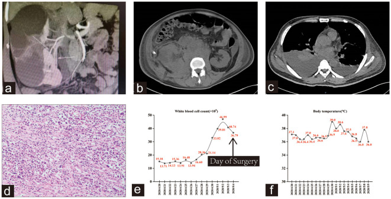
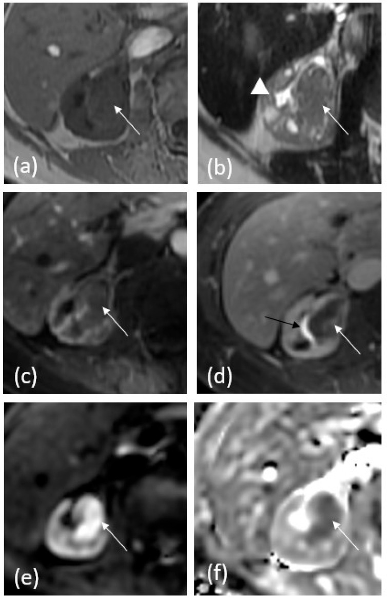
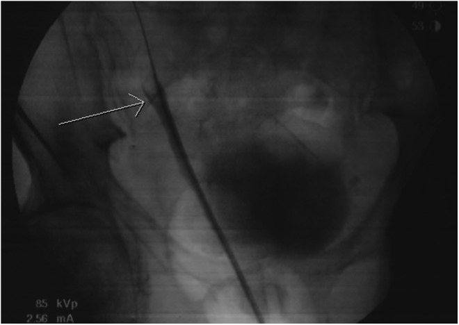

1724 — Ung thư biểu mô niệu mạc đường tiết niệu trên: dấu "goblet" & "stipple" / Upper tract urothelial carcinoma (UTUC)
Tags: pattern:khuyet-long pattern:khong-che-long pattern:u-nieu-mac pattern:u-nuoc-than vung:nieu-quan vung:than vung:bang-quang score:EAU-risk score:TNM-UTUC protocol:CT-urography protocol:MR-urography protocol:noi-soi-nieu-quan incidentaloma:khuyet-long-nieu-quan
Mức chắc chắn (certainty): tổng hợp y văn (literature synthesis) — dựa trên 1 tổng quan hình ảnh có số liệu gộp (PMC10605044), 1 tổng quan chẩn đoán–điều trị 2025 (PMC12346452), 1 nghiên cứu về độ chính xác sinh thiết niệu quản 86 ca (PMC12417869), 1 loạt 244 ca cắt thận–niệu quản (PMC4232409) và 2 bài ca có ảnh (PMC6033302, PMC10800997). Câu nào là suy luận từ bằng chứng gián tiếp được ghi [suy luận].
1. Tổng quan bệnh học – cơ chế hình ảnh
- Định nghĩa: ung thư biểu mô niệu mạc đường tiết niệu trên (upper tract urothelial carcinoma, UTUC) xuất phát từ tế bào niệu mạc lót bể thận – đài thận và niệu quản. UTUC chiếm 5–7% tổng số ung thư biểu mô niệu mạc (PMC10605044; tổng quan 2025 ghi 5–10%, PMC12346452), tỷ lệ mới mắc 1–2/100.000 người/năm.
- Vị trí — đọc trước khi đo: hay gặp nhất ở bể thận; trong niệu quản, tỷ lệ đoạn xa 73% · đoạn giữa 24% · đoạn gần 3% (PMC10605044). Đa ổ là đặc trưng của bệnh niệu mạc — 11–13% bệnh nhân có UTUC thứ phát đồng thời/khác thời điểm, và ~40% về sau phát triển ung thư biểu mô bàng quang; nguy cơ này giảm dần sau 4 năm kể từ lúc cắt thận–niệu quản (PMC10605044).
- TẠI SAO UTUC ngấm thuốc sớm: u là mô tân sinh có mạng mao mạch, mất hàng rào niệu mạc bình thường → bắt iod ở thì vỏ–tủy (corticomedullary, 25–30 giây). Ca minh họa dưới đây: tổn thương 30 HU trước tiêm → 75 HU thì vỏ–tủy (PMC10605044, Fig. 1) — mức tăng 45 HU đủ để tách khỏi máu cục (không ngấm) và sỏi (rất tăng đậm độ, không ngấm).
- TẠI SAO có "goblet sign": u niệu mạc nhú phát triển chậm, làm giãn lòng niệu quản tại chỗ u thay vì xâm lấn nhanh; khi cản quang chảy xuống gặp bờ u tạo mặt khum (meniscus) rồi dừng — đoạn trên giãn + đầu dưới khum trông như cái ly (goblet). Cơ chế này được mô tả là do khối u phát triển chậm làm nở lòng niệu quản (PMC3857980). Hệ quả thực hành: goblet là dấu hiệu của tổn thương trong lòng phát triển chậm, không phải dấu hiệu đặc hiệu của ung thư — xem cạm bẫy ở mục 5.
- TẠI SAO có "stipple sign": cản quang len vào khe giữa các nhú (interstices) của u nhú rồi đọng lại thành các chấm/đốm cản quang nhỏ trong khuyết lòng, giống tranh chấm điểm (stipple). Dấu hiệu này chỉ thấy khi u có bề mặt nhú và cản quang đủ đặc — u phẳng/lan tỏa (flat/sessile) thường không có.
- Ba hình thái cơ bản trên hình ảnh (PMC10605044): (1) khuyết lòng trong đài/bể thận/niệu quản; (2) dày khu trú niệu mạc thành đoạn, ngấm thuốc mạnh; (3) khối thâm nhiễm — điểm chốt so với ung thư tế bào thận (RCC): UTUC thâm nhiễm giữ nguyên đường viền thận, RCC làm biến dạng đường viền.
- Ngưỡng phát hiện theo kích thước (đọc để biết giới hạn của CT): với tổn thương nhú, CT urography có Se 96%/Sp 99% khi 5–10 mm, Se 89% khi < 5 mm, và chỉ Se 40% khi < 3 mm (PMC4232409 dẫn y văn). Nói cách khác: một niệu quản "bình thường" trên CT không loại trừ u < 3 mm.
- Chẩn đoán mô học trước mổ không đáng tin như ta tưởng: so với bệnh phẩm cắt thận–niệu quản ở 86 ca, sinh thiết qua nội soi niệu quản đúng giai đoạn 54,69% (κ = 0,311), đúng độ mô học 70,93% (κ = 0,447); nâng giai đoạn 39,06%, nâng độ 25,58%, và 5,81% mẫu không chẩn đoán được, tập trung ở u bể thận (p = 0,0064) (PMC12417869).
- Dịch tễ của "dương tính giả": trong 244 ca cắt thận–niệu quản vì nghi UTUC, 7 ca (2,9%) là tổn thương lành tính — lao niệu, giả u viêm (2), polyp xơ–biểu mô, sỏi kèm tăng sản nhú, viêm niệu quản polypoid (PMC4232409). Đây là con số tối thiểu để tư vấn trước một phẫu thuật mất thận.
2. Mẫu hình + chẩn đoán phân biệt theo VỊ TRÍ (Gamut)
Mẫu hình chung: khuyết lòng hoặc dày thành niệu mạc + ứ nước/giãn niệu quản phía trên, có hoặc không có đái máu.
- Bể thận – đài thận:
- UTUC nhú: khuyết lòng bờ không đều, stipple sign, đài thận cắt cụt (amputation) hoặc đài ma (phantom calyx — đài bị tắc, không ngấm cản quang); nhu mô thận còn lại bình thường.
- UTUC thâm nhiễm: dày niệu mạc lan tỏa, ngấm thuốc, giữ đường viền thận; có thể giả "viêm thận–bể thận" nếu kèm ứ mủ (PMC10800997: 3 ca không đái máu, sốt nhẹ, bạch cầu tăng, CT chỉ thấy ứ nước + viêm).
- RCC xâm lấn bể thận: khối nhu mô biến dạng đường viền, hoại tử, xuất huyết; khuyết lòng chỉ là phần phụ.
- Sỏi san hô/ sỏi bể thận: cản quang rất cao, không ngấm thuốc, có thể kèm UTUC (sỏi là yếu tố nguy cơ) — không được dừng ở "sỏi" nếu thành niệu mạc dày.
- Niệu quản đoạn gần/giữa:
- UTUC: goblet sign, khuyết lòng, dày thành; đoạn trên giãn.
- Máu cục: khuyết lòng thay đổi giữa các thì, không ngấm, di chuyển theo tư thế; thường tự tan trong 1–2 tuần [suy luận từ cơ chế đông máu, không có ngưỡng thử nghiệm].
- Nhú thận bong (sloughed papilla): khuyết lòng có viền cản quang mảnh (dấu "ring sign"), bối cảnh thiếu máu nhú, đái máu — không ngấm thuốc.
- Bóng mờ do mạch máu/mạch chéo (vascular impression): bờ nhẵn, thay đổi theo nhịp đập/peristalsis, không có ứ nước phía trên.
- Niệu quản đoạn xa:
- UTUC: vị trí hay bị bỏ sót vì bị bàng quang che; cần thì muộn + tư thế.
- Lạc nội mạc niệu quản: nữ sinh sản, nốt T2 rất tối, bờ gai ± endometrioma cùng bên (bài 1661).
- Xơ hóa sau phúc mạc / hẹp do xạ: hẹp dài, nhẵn, đối xứng, không có khuyết lòng khu trú; bối cảnh xạ trị/hậu phẫu.
- U niệu mạc di căn hoặc u khác (lymphoma, di căn đại tràng): hiếm, bờ nhẵn hơn, bệnh sử quan trọng.
- Mẹo nhớ nhanh: khuyết lòng ngấm thuốc + bờ không đều + ứ nước trên chỗ tắc thiên về u; khuyết lòng không ngấm + bờ nhẵn + thay đổi theo thì thiên về cục máu/sỏi.
3. Bảng so sánh phân biệt (ma trận đối chiếu)
| Thực thể (entity) | Hình ảnh điển hình (CTU/MRU) | Chốt vào (rule-in) | Chốt loại (rule-out) | Gợi ý xác nhận |
|---|---|---|---|---|
| UTUC nhú điển hình | Khuyết lòng bờ không đều, stipple sign hoặc goblet sign, đài ma, giãn trên chỗ tắc | Ngấm thuốc thì vỏ–tủy (tăng ≥ 20 HU) + bờ nhú + ứ nước trên | Khuyết lòng không ngấm, bờ nhẵn, đổi hình giữa các thì → máu cục/sỏi | Nội soi niệu quản + sinh thiết; tế bào học nước tiểu |
| UTUC thâm nhiễm | Dày niệu mạc đoạn dài, giữ đường viền thận, ngấm thuốc, có thể ứ mủ | Giữ contour thận + dày thành + ngấm | Khối nhu mô làm biến dạng contour → RCC | MRI T2/DWI + sinh thiết; cắt thận–niệu quản chẩn đoán |
| Sỏi niệu quản | Cản quang rất cao, không ngấm, thường < 10 mm, có "đuôi sao" | HU > 500–1.000, không đổi giữa các thì | Khối ngấm thuốc, bờ nhú → u | CT không cản quang lát mỏng; KUB |
| Máu cục | Khuyết lòng không ngấm, bờ nhẵn, đổi vị trí/hình dạng giữa các thì | Đổi hình + không ngấm + tan khi chụp lại | Khối cố định, ngấm thuốc → u | Chụp lại sau 1–2 tuần [suy luận]; nội soi nếu còn |
| Nhú thận bong | Khuyết lòng có viền cản quang mảnh, bối cảnh đái máu/thiếu máu nhú | Ring sign + không ngấm + bệnh cảnh | Khối đặc ngấm thuốc → u | Theo dõi/niệu quản soi |
| U lành tính (u tuyến thận sinh — nephrogenic adenoma, polyp xơ–biểu mô) | Có thể tạo goblet sign y hệt UTUC; bờ nhẵn, kích thước nhỏ | Bờ nhẵn + tiền sử viêm/mổ niệu quản + không xâm lấn | Không có dấu hiệu nào trên hình ảnh loại trừ được ung thư | Sinh thiết + mô bệnh là chốt; đừng cắt thận vì goblet |
| RCC xâm lấn bể thận | Khối nhu mô biến dạng đường viền, hoại tử, xuất huyết, có thể khuyết lòng | Contour thận biến dạng + khối nhu mô lớn | Giữ contour + dày niệu mạc → UTUC | Cắt lớp 4 thì + MRI; mô bệnh sau mổ |
| Lạc nội mạc niệu quản | Nốt T2 rất tối bờ gai quanh niệu quản, giãn trên nốt, endometrioma cùng bên | T2 tối + bờ gai + nữ sinh sản + endometrioma | Khối trong lòng ngấm thuốc → u niệu mạc | MRI tiểu khung; nội soi + mô bệnh |

Ba thì của cùng một tổn thương bể thận: (a) trước tiêm, (b) thì vỏ–tủy — ngấm rõ, (c) thì bài tiết — khuyết lòng được cản quang bao quanh. Nguồn: Tsikitas LA et al., Cancers 2023 (PMC10605044), CC BY 4.0.Ba dấu hiệu phải đọc thành lời
- Filling defect (khuyết lòng): mô tả vị trí, kích thước, bờ (nhẵn/không đều), có ngấm thuốc hay không, có ứ nước phía trên hay không — bốn thuộc tính này quyết định DDx, không phải chỉ "có khuyết lòng".
- Goblet sign: đầu trên khuyết lòng khum tròn + niệu quản phía trên giãn; dấu hiệu của tổn thương trong lòng phát triển chậm, gặp cả ở u lành (mục 5).
- Stipple sign: chấm cản quang trong khuyết lòng do cản quang đọng giữa các nhú; chỉ gợi ý u nhú, không phân biệt lành/ác.
- Phantom calyx (đài ma): đài thận không ngấm cản quang dù các đài khác bình thường — dấu hiệu tắc nghẽn khu trú, phải tìm nguyên nhân tại cổ đài/bể thận.
4. Protocol chụp + phân độ/điểm chuẩn hóa
- CT urography (CTU) — chuẩn đầu tay: không cản quang + các thì sau tiêm. Thì vỏ–tủy 25–30 giây để bắt u ngấm sớm; thì bài tiết 4–8 phút để cản quang làm đầy – giãn bể thận/niệu quản, biến u thành khuyết lòng; dựng MIP + 3D để thấy đài cắt cụt/đài ma. Hydration uống/truyền tĩnh mạch và furosemide tĩnh mạch giúp giãn niệu quản xa; tư thế sấp và đai ép không có bằng chứng (PMC10605044).
- Hai kỹ thuật: single bolus (nhiều thì, nhạy nhất, liều xạ cao) vs split bolus (gộp thì thận–bài tiết, giảm liều nhưng dễ kém đầy niệu quản xa và mất thì vỏ–tủy). Người trẻ nguy cơ thấp → single bolus; theo dõi dài hạn/nguy cơ cao → split bolus hoặc DECT (ảnh đơn năng ảo + bản đồ iod) (PMC10605044).
- Hiệu năng: gộp 13 nghiên cứu/1.233 bệnh nhân, CTU có Se 92% (95% CI 0,85–0,96) và Sp 95% (0,88–0,98) (PMC10605044). MRU có Se 75% sau tiêm, độ đặc hiệu tương đương CTU; dùng khi chống chỉ định iod hoặc cần tránh xạ.
- MRU — chuỗi tối thiểu: T2 thường + T2 echo rất dài (hydrography), T1 đối pha, T1 fat-sat trước/sau gadolinium (thì vỏ–tủy, thận, bài tiết), DWI/ADC. U ngấm thuốc và hạn chế khuếch tán → ADC thấp; máu cục/nhú bong không ngấm, ADC không hạn chế [suy luận từ vật lý DWI, phù hợp mô tả PMC10605044].
- Quy trình chẩn đoán theo AUA 2023 (PMC12346452): mọi ca nghi UTUC cần CT có cản quang + thì muộn, soi bàng quang, nội soi niệu quản + sinh thiết + tế bào học. Nếu không soi được niệu quản → tế bào học chọn lọc đường niệu trên. Đánh giá niệu quản đối bên chỉ khi có bất thường trên hình ảnh.
- Phân tầng nguy cơ (AUA, bảng 1 của PMC12346452):
- Nguy cơ thấp: độ thấp, tế bào học không có HGUC, không xâm lấn/không tắc/không hạch, một ổ, dạng nhú, không có u đường niệu dưới.
- Nguy cơ cao: độ cao hoặc tế bào học HGUC hoặc có xâm lấn/tắc/hạch hoặc nhiều ổ hoặc dạng phẳng/sessile hoặc có u đường niệu dưới.
- Điều trị theo nguy cơ — con số để tư vấn: nội soi bảo tồn thận (endoscopic management, EM) ở bệnh thấp nguy cơ: sống 5 năm 8%, sống đặc hiệu ung thư 5 năm 82%, RFS 2 năm 55%, PFS 2 năm 75% — nhưng phải soi lại trong 3 tháng và có thể cần nhiều lần gây mê (PMC12346452). Cắt thận–niệu quản (RNU) + lấy bàng quang hình chén là chuẩn cho nguy cơ cao/không kiểm soát được bằng nội soi.
- Bảo tồn thận không thua kém ở nhóm chọn lọc: đoàn hệ > 21.000 ca UTUC khu trú cho thấy không khác biệt 5 năm về OS, CSS, RFS, IVRFS, MFS giữa bảo tồn thận và RNU; nhưng trong phân tích đa biến, EM có OS xấu hơn và tái phát đường niệu trên nhiều hơn RNU (PMC12346452).
- Hóa trị: POUT — hóa trị bạch kim bổ trợ sau RNU: DFS 5 năm 66% vs 57%, OS 5 năm 66% vs 57% (PMC12346452). Hóa trị tân bổ trợ bạch kim đang được ưu tiên vì sau RNU chức năng thận giảm, nhiều ca không còn đủ điều kiện dùng cisplatin.
- Theo dõi sau điều trị (EAU, bằng chứng yếu): nguy cơ thấp sau RNU — CTU 3 tháng, 6 tháng, rồi hằng năm đến 5 năm; nguy cơ cao sau RNU — mỗi 6 tháng × 2 năm, rồi hằng năm; sau bảo tồn thận/cắt đoạn niệu quản — 3 tháng, 6 tháng, rồi hằng năm (PMC10605044). Soi bàng quang định kỳ vì ~40% sẽ có u bàng quang.
flowchart TD
A[Khuyết lòng hoặc dày niệu mạc trên CTU] --> B{Có ngấm thuốc thì vỏ-tủy?}
B -->|Không| C[Nghĩ sỏi, máu cục, nhú bong]
B -->|Có| D[UTUC nghi ngờ]
D --> E[Soi bàng quang + nội soi niệu quản + sinh thiết + tế bào học]
E --> F{Nguy cơ thấp?}
F -->|Có| G[Bảo tồn thận: đốt/laser hoặc cắt đoạn niệu quản]
F -->|Không| H[Cắt thận-niệu quản + bàng quang hình chén ± nạo hạch]
G --> I[Soi lại 3 tháng + CTU 3 và 6 tháng rồi hằng năm]
H --> J[CTU 6 tháng x 2 năm rồi hằng năm + soi bàng quang]
5. Biến thể bình thường và cạm bẫy
- Goblet sign KHÔNG đặc hiệu cho ung thư. Ca 79 tuổi có ứ nước–niệu quản phải + dày thành niệu quản; retrograde pyelography cho "goblet sign" điển hình nhưng mô bệnh là u tuyến thận sinh dạng xơ–nhầy (fibromyxoid nephrogenic adenoma) — tổn thương lành tính, xuất hiện sau viêm/mổ niệu quản (PMC6033302). Vì vậy: goblet + bờ nhẵn ở người có tiền sử can thiệp niệu quản = phải sinh thiết, không được cắt thận ngay.
- Bẫy "viêm thận–bể thận": 3 ca UTUC không đái máu, sốt nhẹ, bạch cầu tăng, CT chỉ có ứ nước + thâm nhiễm quanh thận; chẩn đoán chỉ sau cắt thận (PMC10800997). Ở người có sỏi/DJ lưu quên, dày thành niệu mạc + ứ nước không giải thích hết bằng nhiễm trùng phải nội soi.

Panel (a): CTU 3D — thận phải đôi, nhóm đài trên ứ nước nặng, cản quang rất ít; hình ảnh ban đầu bị đọc là viêm/ứ mủ. Nguồn: Guo L et al., Front Oncol 2023 (PMC10800997), CC BY 4.0.- U < 3 mm: CTU chỉ nhạy 40% — đái máu đại thể tái diễn với CTU âm vẫn cần nội soi niệu quản (PMC4232409).
- Sinh thiết âm không loại trừ: 5,81% mẫu không chẩn đoán được, và 39,06% bị nâng giai đoạn sau mổ (PMC12417869) — đừng dùng kết quả sinh thiết "độ thấp" để khẳng định an toàn.
- Co thắt/peristalsis: sóng nhu động có thể tạo khuyết lòng giả; đọc trên nhiều lát, dựng MIP, so sánh thì trước/sau — khuyết lòng thật cố định qua các thì.
- Bơm cản quang kém/không đầy niệu quản: nguyên nhân hàng đầu của "bỏ sót u" — lặp lại với hydration/furosemide trước khi kết luận bình thường (PMC10605044).
- Không bỏ qua bàng quang: UTUC đa ổ; ~40% có u đường niệu dưới về sau — soi bàng quang cùng lúc, không chỉ đọc niệu quản.
6. Tự lượng giá — Blind Quiz
Ca 1 — Nam 81 tuổi, tiền sử ung thư biểu mô bàng quang, đi theo dõi; CTU 3 thì bể thận phải.
- Hỏi: tổn thương tăng bao nhiêu HU giữa trước và sau tiêm? Vì sao nó thành khuyết lòng ở thì muộn? Chẩn đoán và bước tiếp theo?
Bấm để hiện đáp án (findings + chẩn đoán)
- Findings: tổn thương bể thận phải 30 HU trước tiêm → 75 HU thì vỏ–tủy; thì bài tiết cản quang bao quanh thành khuyết lòng. Không có sỏi cản quang, không khối nhu mô làm biến dạng thận.
- Chẩn đoán: UTUC — ngấm sớm do mạng mao mạch u, rồi lộ ra thành khuyết lòng khi cản quang đổ đầy hệ thống.
- Bước tiếp: soi bàng quang + nội soi niệu quản + sinh thiết + tế bào học; phân tầng nguy cơ trước khi chọn bảo tồn hay cắt thận–niệu quản.
- Nguồn ảnh: Tsikitas LA et al., Cancers 2023 (PMC10605044), Fig. 1, CC BY 4.0.
Ca 2 — Nữ 64 tuổi, khối bể thận phải, cần đánh giá không dùng iod.

- Hỏi: chuỗi nào cho thấy khối? Dấu hiệu nào giúp phân biệt với máu cục? Khi nào chọn MRU thay CTU?
Bấm để hiện đáp án (findings + chẩn đoán)
- Findings: T1 trước tiêm — khối đồng tín hiệu trong bể thận làm mất nhiều đài; T2 — khối đồng/giảm tín hiệu, giãn nhẹ; T1 fat-sat sau gadolinium — ngấm thuốc không đồng nhất; DWI — hạn chế khuếch tán.
- Chẩn đoán: UTUC. Máu cục không ngấm và không hạn chế khuếch tán; u ngấm + ADC thấp.
- Chọn MRU khi: chống chỉ định iod, cần tránh xạ (thai, trẻ), hoặc theo dõi dài hạn; lưu ý Se 75%, thấp hơn CTU.
- Nguồn ảnh: Tsikitas LA et al., Cancers 2023 (PMC10605044), Fig. 2, CC BY 4.0.
Ca 3 — Nam 79 tuổi, ứ nước–niệu quản phải, không đái máu; retrograde pyelography có "goblet sign".

- Hỏi: goblet sign chứng minh ung thư không? Ba chẩn đoán phân biệt? Cách xác nhận?
Bấm để hiện đáp án (findings + chẩn đoán)
- Findings: niệu quản phải giãn trên một khuyết lòng bờ khum; goblet sign.
- Chẩn đoán: ca này mô bệnh là u tuyến thận sinh dạng xơ–nhầy (nephrogenic adenoma) — lành tính, không phải UTUC (PMC6033302). DDx: UTUC nhú, máu cục, polyp xơ–biểu mô/u lành, sỏi.
- Chốt: nội soi niệu quản + sinh thiết; goblet chỉ nói "tổn thương trong lòng phát triển chậm", không nói lành/ác.
- Nguồn ảnh: Dropkin BM et al., J Endourol Case Rep 2018 (PMC6033302), Fig. 2, CC BY 4.0.
Bài liên quan chéo
- 159 – Bàng quang & đường niệu trên: VI-RADS, xâm lấn cơ & UTUC
- 151 – U thận đặc: phân biệt RCC – UTUC thâm nhiễm
- 190 – Sỏi đường niệu trên & thận ghép: CT liều thấp, URS/PCNL
- 1620 – Ứ nước thận & urinoma do khối tiểu khung lành tính
- 1661 – Lạc nội mạc niệu quản: nốt T2 tối bờ gai
- 1608 – Ung thư niệu mạc thứ phát sau xạ trị tiểu khung
Không dùng để chẩn đoán độc lập khi chưa có người hướng dẫn.